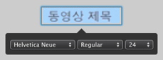

메뉴에 텍스트를 추가하려면,

텍스트를 추가하려는 메뉴가 iDVD 윈도우에 나타나는지 확인하십시오.

프로젝트 > 텍스트 추가를 선택하십시오.
메뉴에 "편집하려면 클릭"이라는 문구가 나타납니다.

텍스트를 한 번 클릭하여 강조한 다음, 새로운 텍스트를 입력하십시오.
위치 내 조절기(아래 참조)가 텍스트 아래에 나타납니다. 여기에는 텍스트의 활자, 서체 스타일 및 서체 크기를 변경할 수 있는 조절기가 있습니다. 원하는 경우 변경을 하거나 텍스트 바깥의 메뉴를 클릭하여 위치 내 편집기가 사라지도록 할 수 있습니다.


텍스트가 선택된 상태로 텍스트를 메뉴상의 원하는 위치로 드래그하여 놓으십시오.